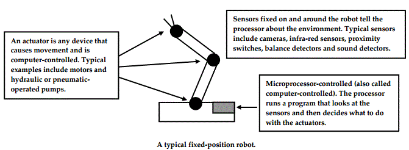

<div id="jsn-maincontent" class="span9 order1  row-fluid">
					<div id="jsn-maincontent_inner">
						<div id="jsn-centercol"><div id="jsn-centercol_inner">
									<div id="jsn-mainbody-content" class=" jsn-hasmainbody">
								<div id="jsn-mainbody-content-inner1"><div id="jsn-mainbody-content-inner2"><div id="jsn-mainbody-content-inner3"><div id="jsn-mainbody-content-inner4" class="row-fluid">
								
										
								
								<div id="jsn-mainbody-content-inner" class="span12 order1 ">
		
										<div id="jsn-mainbody">
										<div id="system-message-container">
	</div>

										<div class="item-page" itemscope itemtype="https://schema.org/Article">
	<meta itemprop="inLanguage" content="en-GB" >
	
		
						
		
	
	
		
								<div itemprop="articleBody">
		<p></p>
<h1 style="text-align: center;">Robots</h1>
<p><strong>Introduction<br></strong>According to the British Computing Society's "A Glossary of Computing Terms", a robot is "a computer-controlled mechanical&nbsp;device which is sufficiently flexible to be able to do a variety of tasks". Robots are used extensively, including for welding,&nbsp;painting cars, assembling parts of machines, shearing sheep, packing and unpacking boxes, in warehouses to collect items,&nbsp;space exploration, deep sea exploration, picking fruit, bomb disposal, surgery, maintenance in nuclear reactors, assembling&nbsp;complete houses, building circuit boards, exploring volcanoes and so on!</p>
 
<p><strong>What is a robot?</strong><br>The word ‘robot’ comes from the Czech word ‘robotnik’ meaning ‘worker’ and was coined for English use in the early 20 th&nbsp;century. Robots are essentially computer controlled mechanical devices that are based on the human arm. The arms often have&nbsp;‘joints’, a little bit like elbow joints, to allow greater flexibility. These are positioned using computer-controlled motors (known&nbsp;as ‘actuators’), the computer calculating the correct position for the arm. Sometimes, the joints have a sensor. The sensor ‘feeds&nbsp;back’ to the computer what angle a joint is actually at and the computer compares that with what angle it wants the joint to get&nbsp;to. It then uses the motor to adjust the joint position and the process of ‘feedback’ is repeated. Robots usually have a specialised&nbsp;‘hand’ or gripper on the end of the arms that can be designed for carrying out different jobs. The grippers can also be controlled&nbsp;by actuators but pneumatics and hydraulics can be used as well.</p>
<p>They are usually designed to perform a task over and over again with great accuracy and speed and they have the ability to&nbsp;react with their environment; when the environment in which the robot is operating changes, the robot’s behaviour changes.&nbsp;Some robots are static. They are fixed in one place. Others have the ability to roam around!</p>
<p></p>
<p><br>A typical robot will be made up of sensors, actuators and a computer. The computer’s job is to read the data from the sensors,&nbsp;make sense of it and then operate the actuators as appropriate.</p>
<p><strong>Degrees of freedom</strong><br>If we examine the human arm for a moment, we can see the movement it provides us with is quite complex. You can rotate&nbsp;your shoulder up and down as well as left and right. At the elbow, you can move your lower arm up and down. The wrist can&nbsp;be rotated, moved up and down and also left and right. Each finger is complex, being made up of more joints that provide more&nbsp;opportunities for movement. Each of the ways of movement at any particular joint is known as a degree of freedom. So the&nbsp;shoulder joint has 2 degrees of freedom. The elbow has one degree of freedom, the wrist three and so on. The more degrees of&nbsp;freedom in a system, the more complex the movement that can be achieved. The human arm has many degrees of freedom&nbsp;indeed and so we can manipulate objects easily. When you look at a robot, one of the key features to take note of is how many&nbsp;degrees of freedom it has. The more degrees of freedom it has, the more complex the robot.</p>
<p><strong>Nanorobots and insect robots</strong><br>Robots do not have to be very big. Nanorobots (one nanometer is one thousand millionth of a meter) are tiny robots designed to&nbsp;carry out very specific tasks to a very fine tolerance. They can come with their own on-board computer, just like the one we&nbsp;discussed earlier. There can also be grouped as a set of nanorobots under the control of one computer. These&nbsp;systems are known as insect robots. The use of insect robots, lots of nanorobots working together, has potential applications in&nbsp;medicine, where they can be used to fight disease by seeking out and destroying very specific targets such as bacteria in the&nbsp;body. Their use in building very small machines is also under investigation. Nanorobots are tiny and work faster than larger&nbsp;machines. They also need very little power to work and have the added bonus of lasting a long time! Nanotechnology is an&nbsp;exciting area to be working in and you may want to investigate this area as you consider options for university!</p>
<p><strong>Benefits and drawbacks of robots</strong></p>
<p style="margin-left: 30px;">1) Robots are extremely expensive to buy. They also need highly skilled (and expensive) people to reprogram them&nbsp;to do different things.<br>2) Robots should produce financial benefits because you don't have to pay a salary (amongst the other reasons listed&nbsp;below) but these benefits are not usually felt for a number of years.<br>3) The quality of work produced by robots may be higher than with humans. For example, spot welding can be done&nbsp;to much finer tolerances. Perhaps more importantly, however, the work done by robots will be done to consistent&nbsp;standards. With humans, mistakes can vary with how tired the employee is, the day of the week. Cars that keep&nbsp;breaking down are sometimes referred to as 'Friday afternoon' or 'Monday morning' cars. Mistakes may also creep&nbsp;in if an employee is having personal problems, for example.<br>4) Employees get tired easily, go sick, need breaks and have holidays. Robots can work for much of the time. They&nbsp;do need to stop sometimes, however, for such things as routine maintenance and system upgrades.<br>5) Employees need facilities that don't need to be provided for robots. These include lighting and heating, car parks&nbsp;and toilets, a personnel department to look after them and an accounts department to make sure they're paid!<br>6) Robots can be used in hazardous environments such as for bomb disposal, maintenance in nuclear reactors, space&nbsp;or in very deep parts of the ocean.<br>7) Robots provide opportunities for a higher paid, more skilled workforce, for example, programmers of robots or&nbsp;maintenance people. However, the workforce may be smaller. This means there will be fewer jobs available in a&nbsp;car factory and less unskilled or semi-skilled jobs in a community. This will have an effect on the local economy.<strong>&nbsp;</strong></p>
<p></p>	</div>

	
							</div>

									</div>
				
							</div>
							
				        							
							
							</div></div></div></div></div>			
							
							
		        				</div></div> 
				</div></div>